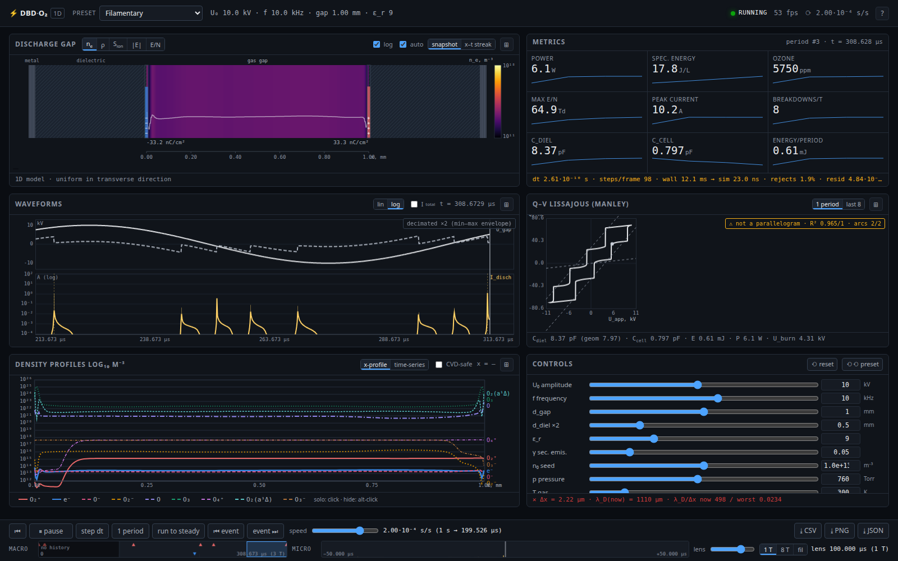
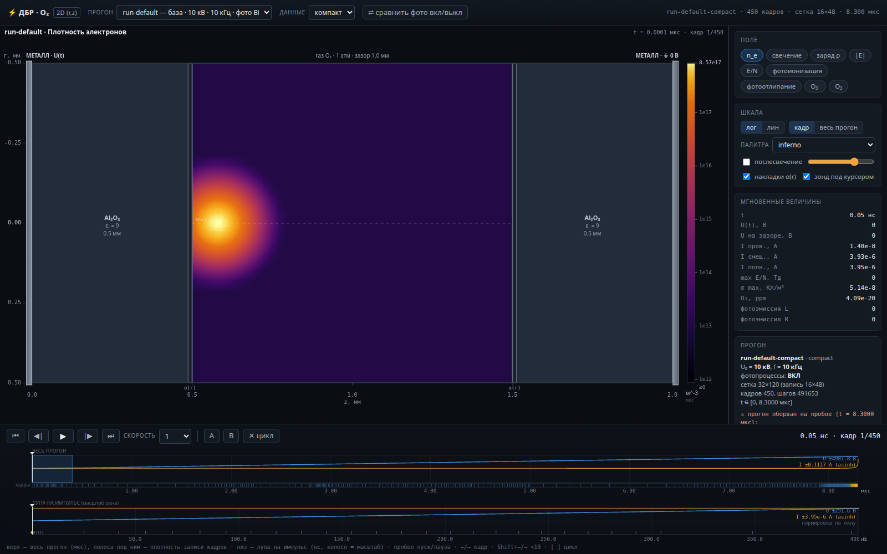
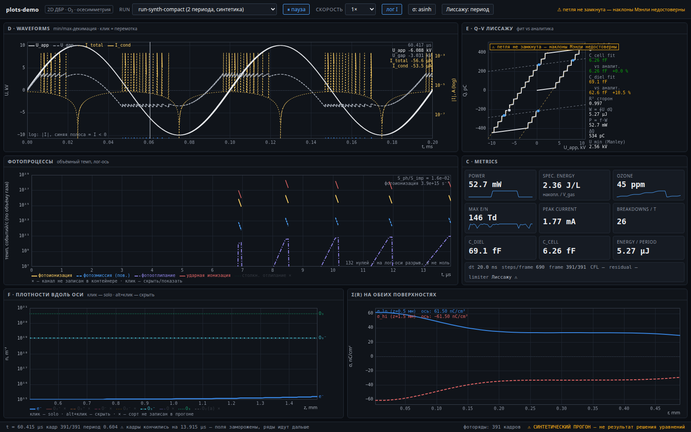

Fluid-модель диэлектрического барьерного разряда в чистом O₂ при атмосферном давлении: дрейф-диффузия в локальном приближении поля, уравнение Пуассона с переменной проницаемостью и накоплением поверхностного заряда, девять сортов частиц, фотопроцессы. Одномерная версия считается прямо в браузере, двумерная — заранее, и проигрывается как анимация.
A fluid model of a dielectric barrier discharge in pure O₂ at atmospheric pressure: drift-diffusion in the local field approximation, a Poisson equation with variable permittivity and surface charge accumulation, nine particle species, photoprocesses. The one-dimensional version is computed right in the browser; the two-dimensional one is computed in advance and played back as an animation.

Считает в реальном времени в браузере. Видно, как зажигаются микроразряды, как копится поверхностный заряд и гасит разряд, как ток идёт короткими импульсами. Параметры крутятся вживую: напряжение, частота, зазор, толщина барьера, вторичная эмиссия.
Открыть →Runs in real time in the browser. You can watch microdischarges ignite, surface charge build up and quench the discharge, and the current flow in short pulses. Parameters can be tuned while it runs: voltage, frequency, gap, barrier thickness, secondary emission.
Open →
Расчёт в координатах (r, z) сделан заранее — здесь он проигрывается покадрово. Переключаются поля: плотность электронов, свечение, объёмный заряд, поле, E/N, скорости фотоионизации и фотоотлипания. Шкала времени двухмасштабная — весь период в миллисекундах и лупа на импульс в наносекундах.
Открыть →The calculation in (r, z) coordinates was done in advance — here it is played back frame by frame. You can switch between fields: electron density, glow, space charge, field, E/N, photoionization and photodetachment rates. The time axis has two scales — the whole period in milliseconds, and a zoom on the pulse in nanoseconds.
Open →
Осциллограммы напряжения и тока, фигура Лиссажу Q–V с извлечением ёмкостей и мощности по методу Мэнли, вклад трёх фотопроцессов против ударной ионизации, профили плотностей вдоль оси и поверхностный заряд σ(r) на обеих поверхностях.
Открыть →Voltage and current waveforms, the Q–V Lissajous figure with capacitances and power extracted by the Manley method, the contribution of the three photoprocesses compared with impact ionization, density profiles along the axis and the surface charge σ(r) on both surfaces.
Open →Здесь честно, потому что без этого числа легко принять за более достоверные, чем они есть.
This part is blunt on purpose: without it the numbers are easy to trust more than they deserve.